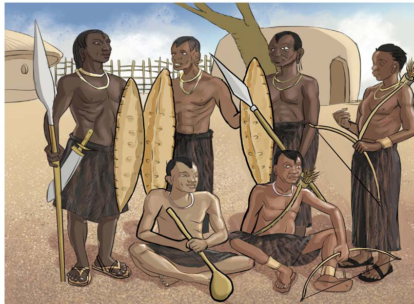

mzazi alikuwa mwalimu wa kwanza wa mtoto. Watu walijifunza wakati wote katika mazingira yanayowazunguka ili kuwawezesha kuyakabili mazingira yao. Hivyo, jamii za wakulima zilijifunza kilimo, jamii za wavuvi zilijifunza uvuvi. Vivyo hivyo, jamii za wahunzi na wafugaji. Vijana walifunzwa pia majira ya mwaka; kiangazi na masika. Watu walifundishwa kazi zilizofanywa katika majira haya. Kimsingi, elimu kabla ya wakoloni ilifundisha watu kujitegemea na kuyakabili mazingira yao.
Pia, vijana hasa wa kiume, walipofikia umri fulani walipewa mafunzo ya ulinzi ili kulinda jamii zao. Vijana walifundishwa kutengeneza silaha; kama vile pinde, mishale, mikuki na sime. Aidha, kila mwanajamii aliandaliwa vizuri na alikuwa tayari kulinda jamii yake. Kielelezo namba 2, kinawasilisha vijana wakiwa na silaha za asili za ulinzi.
